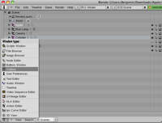
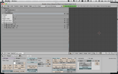
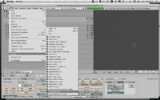
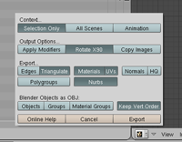

Introduction
Here is an overview of the functionalities provided by this app :- Single marker detection (the marker detection is done using an objective-c wrapper developed over ARToolkitPlus)
- Loading of 3D objects using custom xml and .h files (or .obj but the parser is very slow for now)
- Only one texture file is supported
- The association between a markerID and an object is done using a .plist file
- Admin mode giving access to a GUI to modify the display parameters associated to an object
Compilation prerequisites
Frameworks needed
- QuartzCore
- AVFoundation
- CoreVideo
- OpenGLES
- MessageUI
- CoreMedia
-
libxml 2 (last version available)
To make it compile you'll also have to add /usr/include/libxml2 in your header search path. To do so right click on your application target and select get info, then in the build tab fetch the line Header Search Path and add this path: /usr/include/libxml2.
Getting ARToolKitPlus to compile on iPhone
Only a few tweaks were necessary to make ARToolKitPlus build on the iPhone :
- Do not compile the .cxx files. When ARToolKitPlus is added on XCode all the .cxx files are automatically added to the files to compile. To remove them go to targets, select your app target and remove in the compile sources build phase all the .cxx files.
- The same way you removed the .cxx files, remove the DLL.cpp file. Apple systems don't need this windows stuff ;-)
- I don't know why but apparently
<malloc.h>is called<stdlib.h>in iPhone and OSX. Therefore, replace the occurrences of<malloc.h>by this:#ifndef __APPLE__ #include <malloc.h> #else #include <stdlib.h> #endif - I didn't find the mex.h file, some classes related to robust pose include it so for now remove them from them the same way as .cxx files. If you have any hints on this mex.h let me know.
- Finally you need to add the folder containing the ARToolKitPlus headers in your header search path. To do so right click on your application target and select get info, then in the build tab fetch the line Header Search Path and add the right path (ARToolKitPlus/include in this app).
Loading a 3D object
XML description file
To be loaded by the app a 3D object must be described in an xml file, here is how it looks like :
<?xml version="1.0"?>
<Object3D>
<Name>Banana</Name> The name of the object
<DisplayParameters>
<ScaleFactor>50</ScaleFactor> The scaling applied when displayed
<XRotation>0.000000</XRotation> The rotation along the X axis when displayed
<YRotation>0.000000</YRotation> The rotation along the Y axis when displayed
<ZRotation>0.000000</ZRotation> The rotation along the Z axis when displayed
<ZTranslation>0.000000</ZTranslation> The translation along the Z axis when displayed
</DisplayParameters>
<Files>
<TextureFileName>banana.png</TextureFileName> For now only one texture file is supported
<ModelFileName></ModelFileName> This has to be filled if you want to load the shape description from an obj file (slow)
</Files>
</Object3D>
Loading the shape description of an object
The app is optimized to receive object with normalized coordinates (coordinates between -1 and 1) and centered in [0,0].Here is how a sphere should be positioned and sized :

Using an obj file
In that case you just have to fill the ModelFileName tag in the xml, but again the parsing is for now very slow so use this alternative only for small objects.Using a .h file
These files contain C array describing the vertices, the normals and the texture coordinates for an object. They also contain the length of these arrays. OpenGL ES can only deal with triangle so you might want to be sure that all the faces of the object are shaped this way.To use these .h files you have to:
- Import them in the Object3D.m file, Object3D instances are the internal representation of a 3D object in the app
- Modify the loadShapeAndTextures so that you can bind the properties of your instance to the right arrays.
#import "banana.h"
...
- (void)loadShapesAndTextures {
//Objects loaded from an obj description file
if ([[self.modelFileName pathExtension] isEqualToString:@"obj"]) {
WavefrontParser *parser = [[WavefrontParser alloc] init];
parser.delegate = self;
[parser parseFileNamed:self.modelFileName];
[parser release];
}
else if ([self.name isEqualToString:@"Banana"]) {
self.numberOfVertices = bananaNumVerts;
self.vertices = bananaVerts;
self.normals = bananaNormals;
self.textureCoordinates = bananaTexCoords;
}
}
Associate a markerID to the 3D object
The models.plist file represents a serialized NSDictionary, to associate an object to a marker ID you just have to add an entry with the marker ID as key and the name of the object xml file as value.Here is the example for the banana:
<?xml version="1.0" encoding="UTF-8"?>
<!DOCTYPE plist PUBLIC "-//Apple//DTD PLIST 1.0//EN" "http://www.apple.com/DTDs/PropertyList-1.0.dtd">
<plist version="1.0">
<dict>
<key>0</key>
<string>banana.xml</string>
<key>1</key>
</dict>
</plist>
Now it should be ok and your object should be displayed when the marker with the right ID is detected.
Modifying the way the object is displayed
To modify the way the object is displayed you can either modify the xml file or use the parameters view.Using the parameters view
Activate the admin mode
Go toVRViewController.m and make the constant ADMIN_MODE TRUE.
#define ADMIN_MODE TRUE;
Display the parameters view and make changes
To display the parameters view while an object is displayed in augmented reality just touch the wheel on the screen.Then you can play with the sliders or enter values in the texfields to change the display parameters of the object.
Save those changes
To save the changes, touch the save button. You can also send the modified xml file by mail, this way you can integrate the changes by replacing the previous xml.HOWTO using blender and obj2openGL
Export your blender model in .obj
   {kind=link}
{kind=link}
{kind=link}
{kind=link}
Convert you .obj in .h
Use the obj2openGL script, you can find it on the website of the author or in the utils folder. You need to have perl installed !
~ $./obj2opengl.pl myfile.obj
obj2opengl automatically normalizes the coordinates of your vertices and center the object in (0,0).